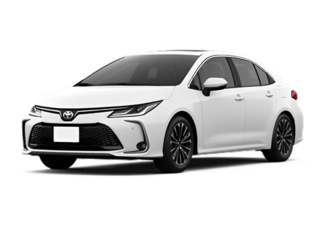

Toyota Corolla XEI
Ano: 2015
Cor: Marrom Urban, Preto Eclipse, Prata Supernova, Branco Perolizado
Descrição:
Motorização e Desempenho:
Motor: 2.0 Dual VVT-i Flex, 16V, 4 cilindros.
Potência:
143 cv (gasolina), 154 cv (etanol) a 5.800 rpm.
Torque:
19,4 kgfm (gasolina), 20,7 kgfm (etanol) a 4.800 rpm.
Câmbio: Automático do tipo CVT (7 marchas simuladas).
Tração: Dianteira (FWD), 0 a 100km/h: Aproximadamente 9,6 segundos.
Consumo médio:
Cidade: 7,8 km/l (etanol), 11,4 km/l (gasolina) /
Estrada: 9,5 km/l (etanol), 13,2 km/l (gasolina).
Tecnologia e Conectividade:
Central multimídia com tela touchscreen de 6,1”,
Reprodutor de DVD, MP3, entrada USB, Bluetooth,
Comandos de áudio no volante,
Computador de bordo com informações de consumo, autonomia e temperatura,
Sensor de estacionamento traseiro (em algumas versões).
Segurança:
7 airbags: frontais, laterais, de cortina e para o joelho do motorista,
Freios ABS com EBD (distribuição eletrônica de frenagem),
Cintos de três pontos para todos os ocupantes,
Sistema de alarme e imobilizador,
Travamento automático das portas com o carro em movimento.
Design Exterior:
Rodas de liga leve aro 16"
Faróis halógenos com máscara negra,
Luzes de condução diurna (DRL) integradas,
Retrovisores elétricos com setas integradas,
Friso cromado na grade frontal,
Design elegante e mais esportivo em relação às gerações anteriores.
Interior e Conforto:
Bancos revestidos em couro,
Ar-condicionado automático digital,
Direção elétrica progressiva (EPS),
Vidros, travas e retrovisores elétricos,
Ajuste de altura e profundidade do volante,
Banco do motorista com regulagem de altura,
Amplo espaço interno, ideal para uso urbano e viagens,
Porta-malas com 470 litros.
Dimensões:
Comprimento: 4.620 mm,
Largura: 1.775 mm,
Altura: 1.475 mm,
Entre-eixos: 2.700 mm,
Porta-malas: 470 litros,
Peso: Aproximadamente 1.280 kg.
Valor: R$78,700